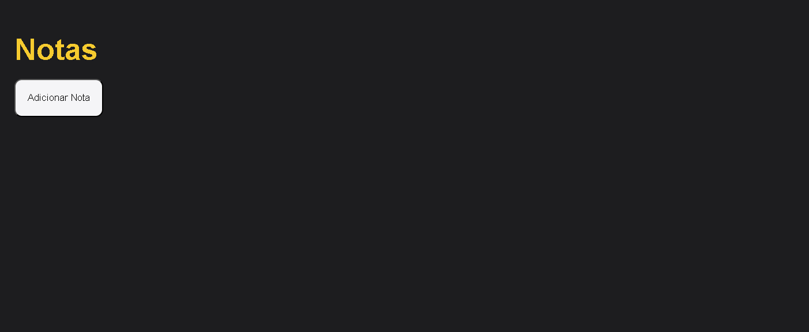
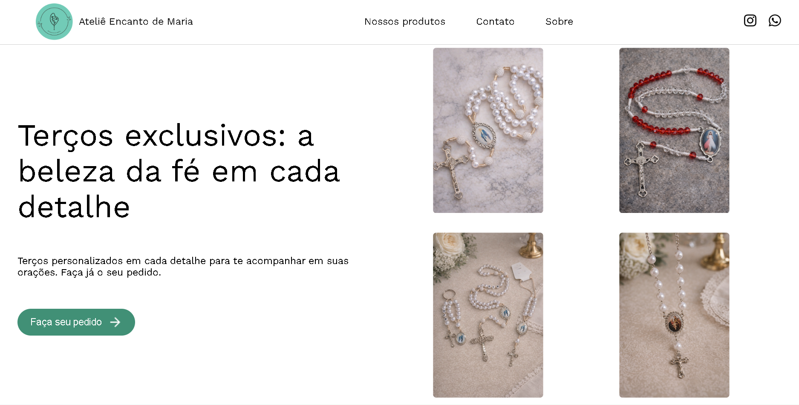
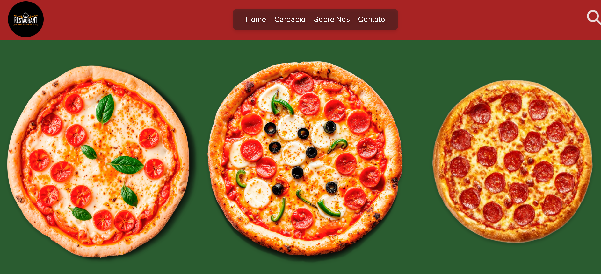
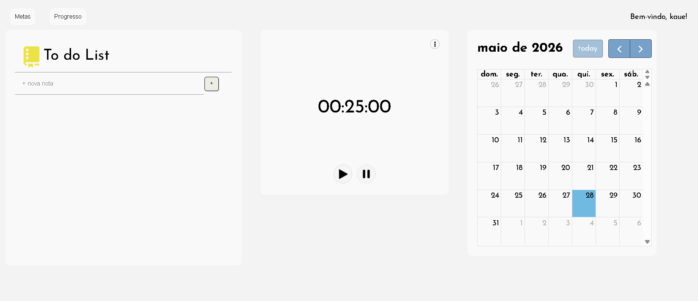

Projetos

Notas rápidas
Esse web app foi desenvolvido para ajudar aqueles que precisam de um aplicativo rápido para fazer anotações. Ele funciona com um bloco de notas simples onde você consegue marcar pontos importante e as notas são salvas na memória do navegador.

Ladding page
Essa ladding page foi desenvolvida para uma empresa, ajudar na visibilidade. Ela apresenta a identidade da loja e direciona o usuário para as redes sociais.

Cardápio digital
Esse site foi desenvolvido para ajudar em meu portifólio. Ele apresenta um restaurante italiano, os produtos e o cardápio que ele ofereçe.

Pomodoro
Esse web app foi desenvolvido para ajudar no foco, a se concentrar melhor nas tarefas. Um pomodoro que te ajuda a se concentrar na hora estabelecida por você mesmo, e possui uma área para colocar as demandas.

Mindfoco
Esse app é uma estação de foco, onde você pode definir metas e acompanhar seus progressos no estudo ou trabalho. Ele conta com um to do list, um pomodoro e um calendário.